1. Overview
Hokulele is a GUI application for photometry and analysis of meteor spectra recorded in video observations. From a meteor movie taken with a camera fitted with a diffraction grating, it covers the whole analysis: the light curve of the zero order (the meteor itself); wavelength calibration, sensitivity correction and synthetic filter photometry of the first order (the spectrum); and, using astrometric calibration by star matching, estimation of the radiant and orbit.
This is the user manual of Hokulele V2.5.1. Using screenshots of the actual windows, it explains each step from loading a movie to analysis and output. The examples use the sample movie sample_synthetic_meteor.avi (960×480, 30 fps, 60 frames; the meteor appears in frames 10–49).
1.1 Main features
Color / monochrome movies (AVI, MP4, MOV, etc.) and image sequences (8/16 bit); ffmpeg is not required
13 gamma corrections (RAW, γ=1, 0.35, 0.45, 1/1.9, 1/2.2, 1/2.4, BT.709, S-Log2, S-Log3, HLG, Canon Log, V-Log) with camera model names
Dark correction (frame range in the movie / external file) and flat correction
Distortion correction (plate constant): concentric-circle chart measurement, or star matching with astrometry.net
Automatic tracking and aperture photometry of the zero order (light curve)
Wavelength calibration, sensitivity correction (3 methods) and synthetic photometry with UBVRI / SDSS ugriz / custom filters for the first order
Estimation of the apparent radiant, velocity and heliocentric orbital elements (single station, assumed heights)
Output of composite spectrum images (maximum / mean) as FITS / PNG / JPEG
Mouse-following loupe, preview playback, keyboard shortcuts, project settings (JSON) and an analysis log
Spectral analysis demo: runs the analysis step by step on a sample movie
English / Japanese display
1.2 Changes in V2.5
English / Japanese display: The windows, messages and headers of output files can now be shown in English. Switch with the "言語 / Language" menu in the menu bar (Section 2.6).
New download page: Hokulele is now distributed from https://github.com/nu-sx/hokulele. The spectral analysis demo also downloads its data from there.
English manual: This English manual (Hokulele_Manual_en.docx) is included with the software.
Icon (V2.5.1): New icon showing the constellation Leo, a Leonid meteor with its zero- and first-order images, and a meteor spectrum.
1.3 Changes in V2.4
Windows / macOS versions: Hokulele can be installed from an installer (Windows) or a dmg (macOS) without setting up Python (Chapter 2).
Spectral analysis demo: "Start demo" in the Movie tab downloads a sample movie from GitHub and demonstrates the analysis from loading to first-order spectral photometry (Section 4.1).
Negative counts: Negative counts used to be clipped to 0 before sensitivity correction, which biased low-S/N intensities upward. They are no longer clipped by default; the old behavior is available as "Clip negative counts to 0" in the 1st order tab.
Bug fixes: The fourth value of distortion files (V0.971 format) is now read correctly as the horizontal field of view; the G→R channel switching point of sensitivity curves is determined in the same way as V0.971; the incidence angle is computed from the distance of the zero-order position from the image center.
1.4 Citation and acknowledgment
When you publish results obtained with Hokulele, please cite the following paper and mention Hokulele in the acknowledgments.
Reference
Abe, S., Ogawa, T., Maeda, K., & Arai, T. (2020). Sodium variation in Geminid meteoroids from (3200) Phaethon. Planetary and Space Science, 194, 105040. https://doi.org/10.1016/j.pss.2020.105040
Example acknowledgment
This research made use of Hokulele, a meteor spectroscopy analysis software (Abe et al., 2020).
2. Requirements and installation
2.1 Requirements
| OS | Requirement |
|---|---|
| Windows | Windows 10 / 11 (64-bit) |
| macOS | macOS 12 or later on an Apple silicon (M1 or later) Mac. Intel Macs are not supported |
The spectral analysis demo and star matching (astrometry.net) need an Internet connection.
2.2 Download
Download the file for your OS from "Releases" on the following page.
https://github.com/nu-sx/hokulele/releases
| OS | File name |
|---|---|
| Windows 10 / 11 | Hokulele-2.5.1-Windows-x64-Setup.exe (installer) |
| macOS | Hokulele-2.5.1-macOS-arm64.dmg |
| User manual | Hokulele-2.5.1-Manual-en.docx (English) / Hokulele-2.5.1-Manual-ja.docx (Japanese) |
SHA256SUMS.txt on the same page lists the checksum of each file. Use it to check that a downloaded file is not corrupted.
2.3 Installing on Windows
Double-click Hokulele-2.5.1-Windows-x64-Setup.exe.
If "Windows protected your PC" appears, click "More info" and then "Run anyway" (the warning appears because the installer is not code-signed).
Follow the instructions. By default Hokulele is installed in your user folder. You can choose whether to create a desktop icon.
Start Hokulele from "Hokulele" in the Start menu. The same folder has shortcuts to the user manuals (Japanese / English) and to the samples and documents folder.
To uninstall, go to Settings > Apps > Installed apps and select Hokulele.
2.4 Installing on macOS
Double-click Hokulele-2.5.1-macOS-arm64.dmg to open it.
Drag Hokulele.app to the "Applications" folder in the same window.
Open Hokulele in the Applications folder.
If macOS says the app cannot be opened because the developer cannot be verified, open System Settings > Privacy & Security and click "Open Anyway" near the bottom (the warning appears because the app is not notarized by Apple).
The dmg also contains the read-me files (English / Japanese), the sample movie and the user manuals (English / Japanese).
2.5 Starting and quitting
Hokulele starts with the main window in Figure 1. To quit, close the window and click "OK" in the confirmation dialog.
2.6 Display language (English / Japanese)
Hokulele can be displayed in English or Japanese. On first launch the language is chosen automatically from the OS display language.
Open the "言語 / Language" menu in the menu bar (on macOS it is in the menu bar at the top of the screen; on Windows it is at the top of the window).
Choose "English" or "日本語" (Japanese).
When asked whether to restart now, click "Yes" to restart Hokulele in the new language. If you click "No", the change takes effect the next time you start Hokulele.
Only the display changes. The analysis methods and the resulting numbers do not depend on the language.
In English, the header lines of output text files, the analysis log and the orbit report are also in English.
The setting is saved in Hokulele_data/hokulele_settings.json in your home folder.
Note: Restarting discards the current analysis. If needed, save the project settings first with "Save settings (JSON)".
2.7 Where data is saved
Results are written to the "<movie name>_result" folder inside the "Result folder" (set in the Movie tab).
The data and results of the spectral analysis demo are saved in Hokulele_data/demo in your home folder. You may delete them when no longer needed.
3. Window layout and basic operation
3.1 Main window
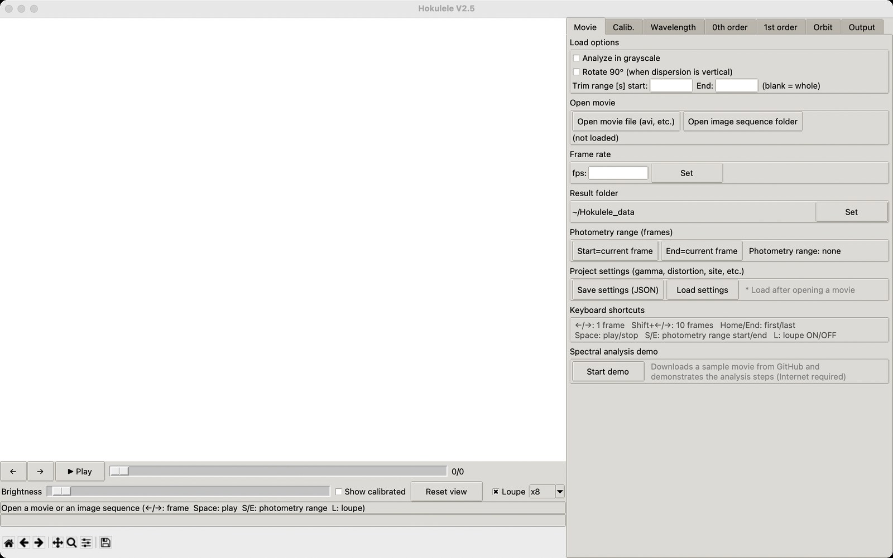
The main window has two panes. The left pane shows the image; the right pane has the analysis tabs (Movie / Calib. / Wavelength / 0th order / 1st order / Orbit / Output).
| Area | Contents |
|---|---|
| Image area | Shows the current frame or a composite image. Click here for measurements (chart intersections, emission lines, zero-order position, etc.) |
| Frame controls | ← / → buttons, ▶ Play button, frame slider, frame number and elapsed time [s] |
| Display controls | Brightness slider, "Show calibrated", "Reset view", "Loupe" check box and zoom (x4/x8/x16) |
| Status bar | Shows progress and what to do next |
| Pixel value bar | X, Y coordinates and value under the mouse (R, G, B for color; Count for monochrome) |
| Toolbar (bottom) | Standard matplotlib home, back/forward, pan, zoom, subplot settings and save image |
| Analysis tabs (right) | Settings and run buttons for each analysis step |
3.2 Loupe (mouse-following magnifier)
When you move the mouse over the image, a small window (the loupe) showing a magnified view around the cursor appears at the lower right of the cursor (Figure 2). It helps you check faint meteor images and click chart intersections, emission lines and the zero order with one-pixel accuracy.
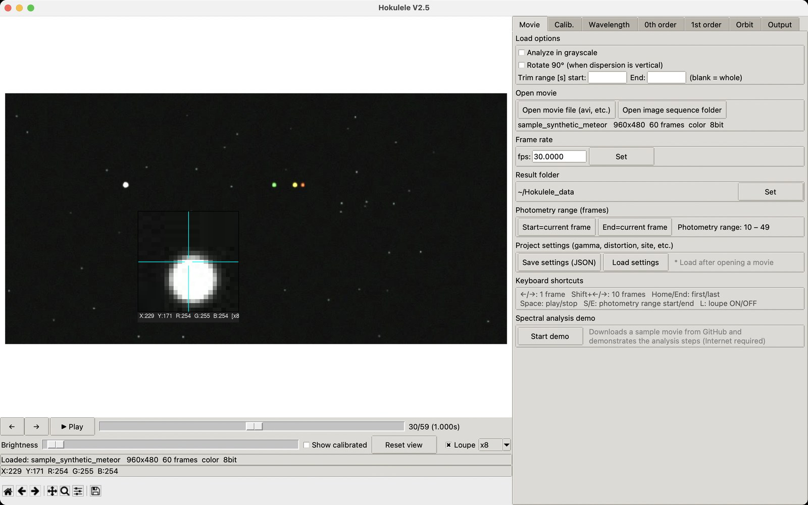
The crosshair in the center marks the pixel of interest (the pixel that will be clicked). The coordinates, value and zoom are shown at the bottom.
Near the right and bottom edges of the screen the loupe moves to the other side automatically.
Choose the zoom (x4 / x8 / x16) in the combo box of the display controls. Turn it on/off with the "Loupe" check box or the L key.
Note: The loupe magnifies the displayed image (with brightness and "Show calibrated" applied). The pixel values shown are raw counts before gamma correction.
3.3 Preview playback
The ▶ Play button (or the Space key) plays the movie from the current frame. While playing, the button changes to ■ Stop; playback stops automatically at the last frame.
3.4 Keyboard shortcuts
| Key | Action |
|---|---|
| ← / → | Back / forward 1 frame |
| Shift + ← / → | Back / forward 10 frames |
| Home / End | First / last frame |
| Space | Preview play / stop |
| S / E | Photometry range start / end = current frame |
| L | Loupe on / off |
Note: Shortcuts do not work while the cursor is in a text box. Click the image or a slider first.
4. Analysis workflow (quick start)
4.1 Try the workflow with the spectral analysis demo
When you use Hokulele for the first time, we recommend running the spectral analysis demo. Using a sample movie, it demonstrates the steps from loading the movie to first-order spectral photometry and displaying the results, with the same operations as in normal use.
Click "Start demo" under "Spectral analysis demo" at the bottom of the Movie tab. The demo window in Figure 3 opens.
Click "Next ▶" to advance one step at a time. The description of each step appears at the bottom of the demo window, and the corresponding tab opens and is operated in the main window. Click positions are first shown as cyan × marks and then confirmed (Figure 4).
Click "Run all" to run the remaining steps in sequence.
When all steps are done, each step is marked "✓ Done" (Figure 5). Use "Open result folder" to look at the spectrum text files and the analysis log.
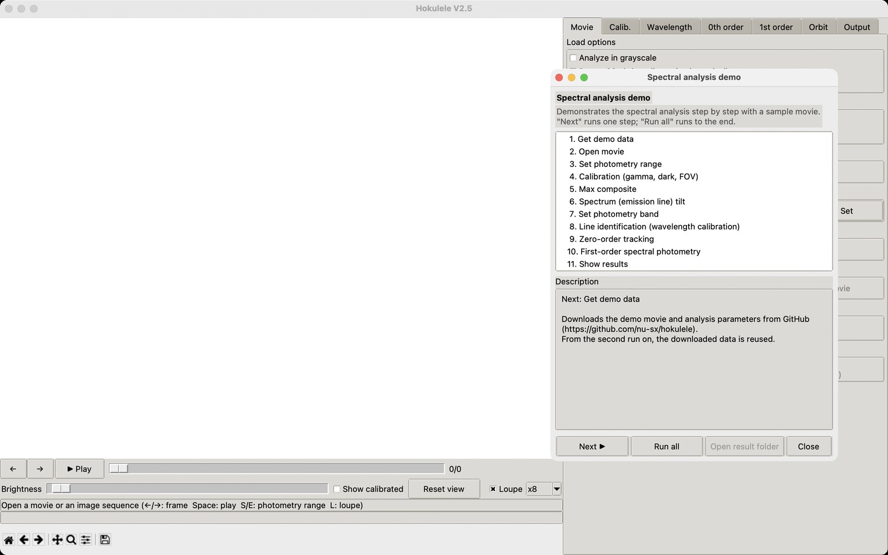
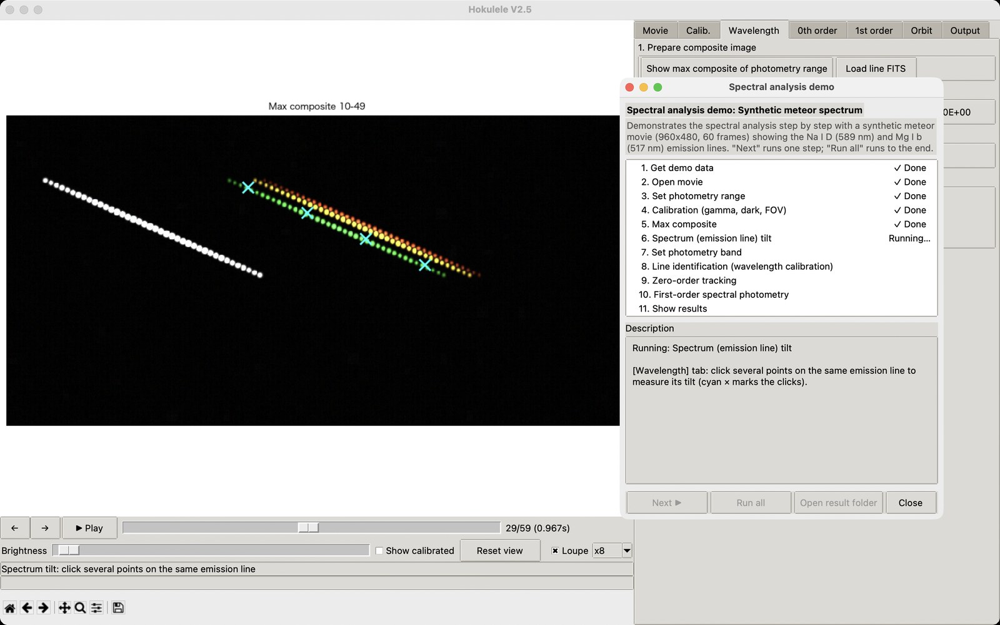
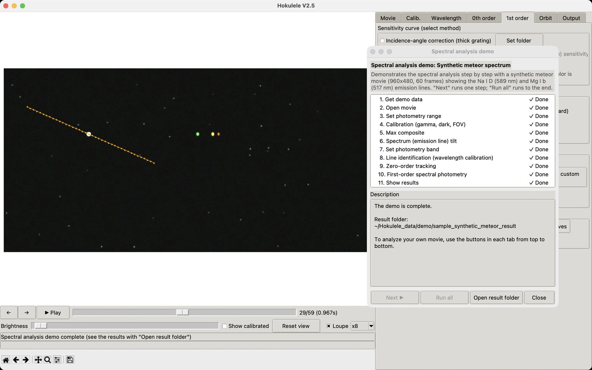
| Step | Contents |
|---|---|
| 1. Get demo data | Downloads the sample movie and analysis parameters from GitHub (nu-sx/hokulele). From the second run on, the saved data is reused |
| 2–3. Movie, photometry range | Opens the movie and sets the photometry range to frames 10–49 |
| 4. Calibration | γ = RAW, dark = frames 0–8, horizontal FOV 60° |
| 5–8. Wavelength calibration | Max composite, emission line tilt, photometry band, line identification (Na I D 589.16 nm, Mg I b 517.27 nm) |
| 9. Zero-order tracking | Tracks the meteor automatically with aperture photometry |
| 10–11. First order | No sensitivity correction; synthetic photometry in B, V and R; shows the light curves and the mean spectrum |
Note: The demo needs an Internet connection (about 1 MB is downloaded the first time). Starting the demo discards the current analysis. The demo results are saved in Hokulele_data/demo in your home folder.
4.2 Analysis steps
A standard analysis goes as follows. See Chapter 5 for details of each step.
[Movie tab] Set the load options, open the movie (or image sequence), and check the fps and the result folder.
[Movie tab] Set the frame range in which the meteor appears as the photometry range (S / E keys also work).
[Calib. tab] Choose the gamma correction for your camera (see Chapter 6).
[Calib. tab] Set the dark and flat.
[Calib. tab] Set the distortion correction (chart measurement or star matching) and the horizontal field of view. Star matching is required for orbit estimation.
[Calib. tab] Measure the grating tilt (dispersion axis).
[Wavelength tab] Calibrate the wavelength: max composite → spectrum tilt → photometry band → line identification.
[0th order tab] Click the meteor, run tracking + aperture photometry, and save the light curve.
[1st order tab] Set the sensitivity curve and filters and run the photometry.
[Orbit tab] Enter the site, UTC time and assumed heights, and estimate the radiant and orbital elements.
[Output tab] Save composite spectrum images as FITS / PNG / JPEG.
[Movie tab] Save the project settings with "Save settings (JSON)" to reuse them in the next analysis.
5. Operating each tab
5.1 Movie tab
Load options
Analyze in grayscale: analyzes a color movie using luminance only.
Rotate 90°: turns a movie whose dispersion is vertical into a horizontal one (the dispersion axis is assumed horizontal).
Trim range [s]: loads only part of a long movie (blank = whole movie).
Note: Set these options before opening the movie.
Opening a movie
"Open movie file (avi, etc.)" loads AVI / MP4 / MOV / MKV / WMV / M2TS, etc.; "Open image sequence folder" loads a sequence of still images (including 16-bit TIFF/PNG). After loading, the file name, resolution, number of frames, color/gray and bit depth are shown (Figure 6).
Frame rate and result folder
The fps is read from the movie. For image sequences, or if you know the exact value, enter it and click "Set". The fps directly affects the times of the light curves and the velocities in the orbit estimate. Results are written to "<Result folder>/<movie name>_result/".
Photometry range (frames)
Set the range of frames in which the meteor appears. Move to the first frame of the meteor with the slider (or ← / →) and click "Start=current frame", then move to the last frame and click "End=current frame" (or use the S / E keys). The range is shown on the right (Figure 7).
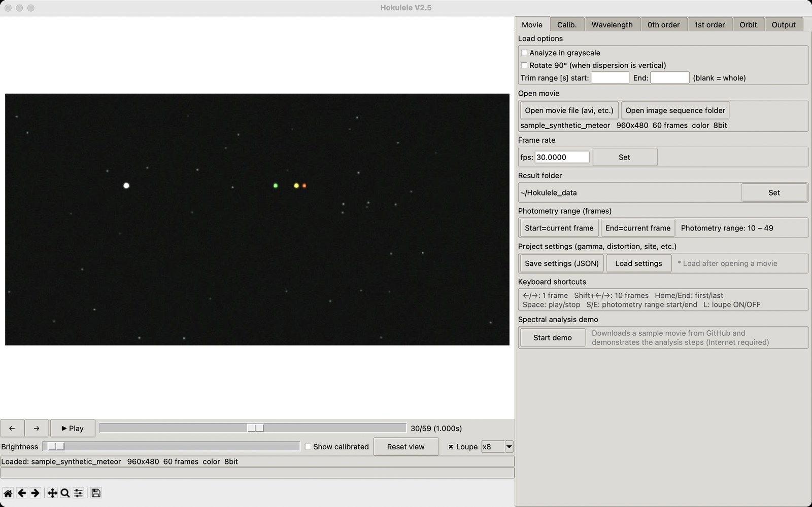
Saving / loading project settings
"Save settings (JSON)" saves the gamma setting, result folder, sensitivity curve, photometry range, fps, distortion coefficients, grating tilt, observing site and load options to a JSON file. "Load settings" restores them (load them after opening the movie).
Note: The dark/flat file selections and the wavelength calibration are not included. Use "Save cal. / Load cal." in the Wavelength tab for the wavelength calibration.
Spectral analysis demo
"Start demo" starts the spectral analysis demo (Section 4.1).
5.2 Calib. tab
Gamma correction
Choose the setting for your camera from the drop-down list and click "Set". A description with the supported camera models appears below. See Chapter 6 for details.
Dark image
From the movie: move to frames before the meteor and click "Start=current" and "End=current"; the mean of that range becomes the dark (the sky background is subtracted at the same time).
Select external file: a FITS file written by Hokulele is recommended (PNG/TIFF etc. also work).
Off: turns off dark correction.
Flat image
A FITS file normalized to a maximum of 1 is recommended (create one with "Output with maximum = 1" in the Output tab).
Distortion correction (plate constant)
Radial distortion is corrected with the Brown model r_obs = r_true (1 + k1 r² + k2 r⁴ + k3 r⁶). The current coefficients, focal length, horizontal field of view, method and WCS status are shown at the top of the frame.
Chart measurement: On an image of a concentric-circle chart, click "Chart measurement" to open the small window in Figure 9. Click the intersections of the circles with the radial lines, starting from the innermost circle (clicks are shown as cyan × marks); click "Next circle" for each circle and "Finish" at the end to fit k1, k2 and k3 (at least four circles are required). With this method, enter the horizontal field of view [deg] and click "Set".
Star matching (astrometry.net): This opens the dialog in Figure 10. Enter your API key (nova.astrometry.net → My Profile → API key) and click "Run plate solve". The max composite (or the current frame) is plate-solved, and the focal length, distortion coefficients and horizontal field of view are set from the WCS. The WCS is also used for orbit estimation.
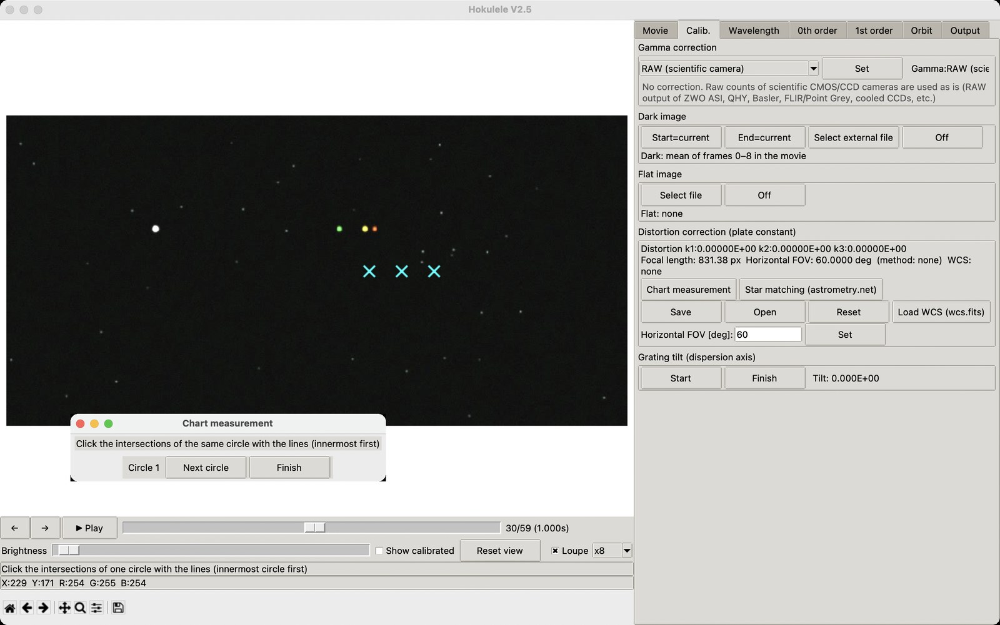
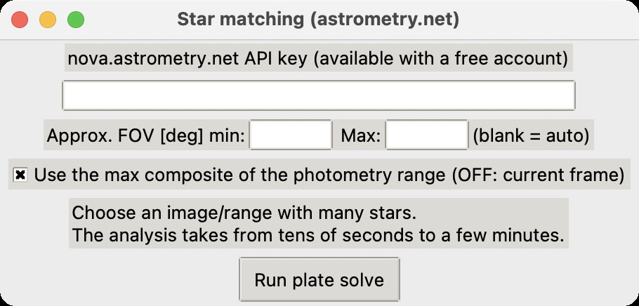
The results can be saved and reused as V0.971-compatible text (k1, k2, k3, ff) with "Save" and "Open". "Reset" resets the coefficients, and "Load WCS (wcs.fits)" loads a saved WCS.
Grating tilt (dispersion axis)
Click "Start", click several feature points on the center line of one spectrum, and click "Finish". The tilt of the dispersion axis is obtained by a straight-line fit.
5.3 Wavelength tab (line identification)
Step 1: Prepare the composite image
Click "Show max composite of photometry range" to show the maximum (lighten) composite of the frames in the photometry range (Figure 11). The white trail is the zero order (the meteor itself); the colored trails on the right are the emission lines of the first-order spectrum. To use an image of a calibration lamp, click "Load line FITS".
Step 2: Spectrum (emission line) tilt
Click "Start (click several points on one line)", click several points on the trail of one emission line (cyan × in Figure 12), and click "Finish". The tilt is shown on the right.
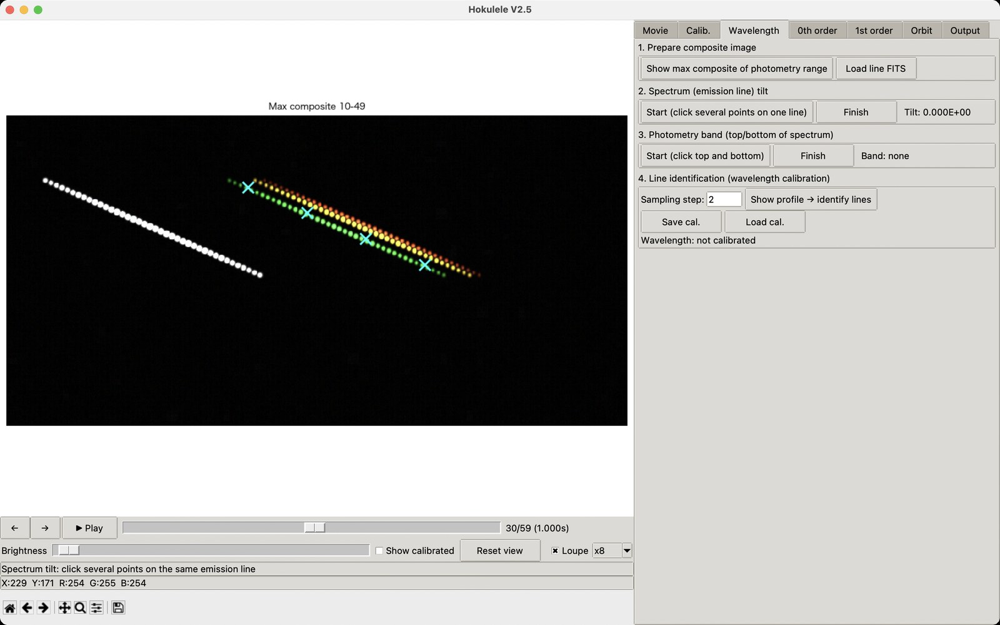
Step 3: Photometry band
Click "Start (click top and bottom)", click the top and bottom edges of the spectrum with some margin (Figure 13), and click "Finish".
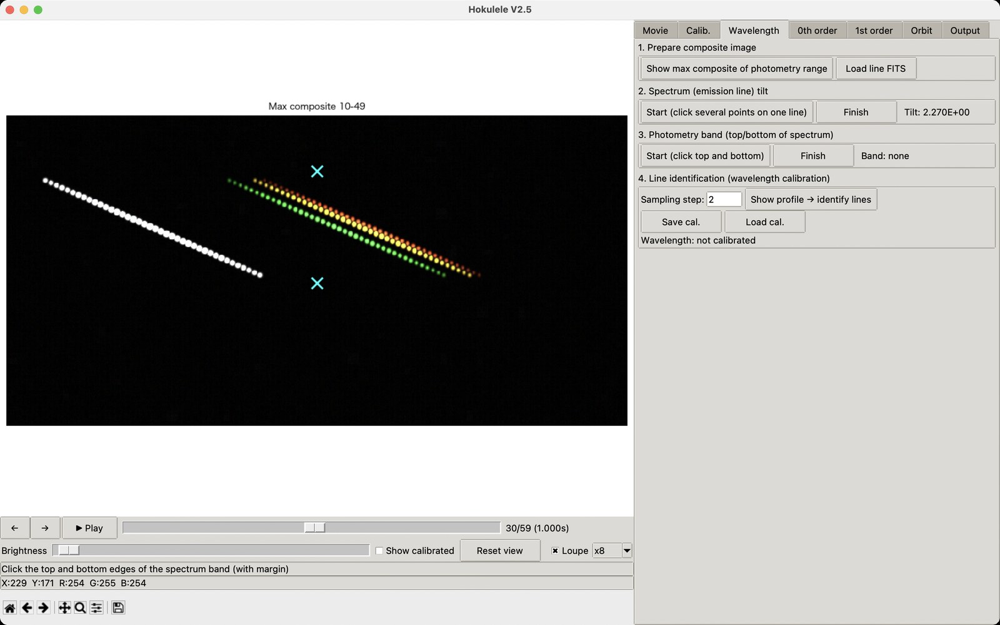
Step 4: Line identification
Click "Show profile → identify lines" to open the line identification window in Figure 14. The graph shows the counts in the band at each pixel position (the large peak on the left is the zero order).
Click a peak in the graph; the marker snaps to the nearest maximum and a red dot is shown (fine-tune with the ≪ < > ≫ buttons).
Enter the wavelength in "Wavelength [nm]", or choose it from the drop-down list on the right (reference lines).
Click "Set wavelength (this peak)" to register the calibration point; a green vertical line and the wavelength are shown. Remove a wrong point with "Delete 1 point".
After registering two or more points (four or more recommended), click "Calibrate (fit)". With four or more points a quadratic λ = ax² + bx + c is fitted, with two or three points a linear one, and the horizontal axis switches to wavelength [nm] (Figure 15).
Click "Finish" to close the window.
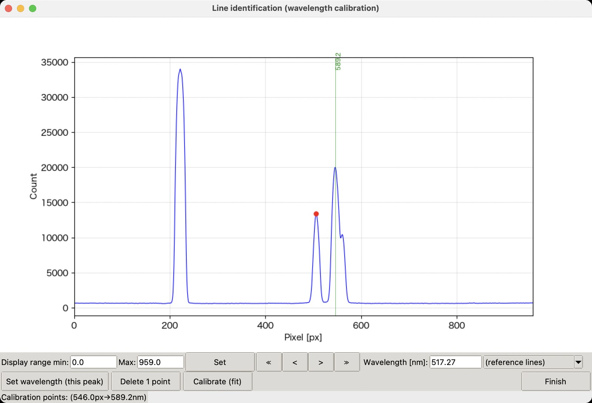
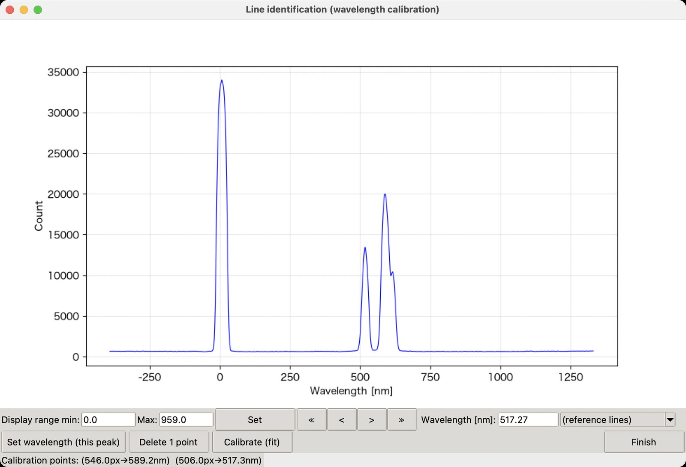
When the calibration is done, the fit equation, the linear approximation, the zero-order position x0, the list of calibration points and the RMS residual are shown in the Wavelength tab (Figure 16) and recorded in the analysis log. If the RMS residual is clearly larger than the wavelength resolution, check for misidentified lines or add calibration points.
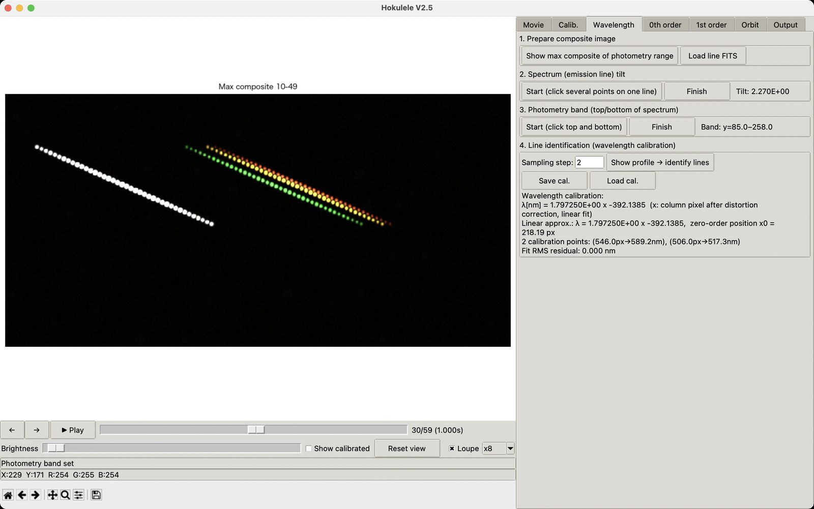
Note: The example uses only two points (linear fit) because it is a sample movie. Four or more points are recommended for real data. Reuse a calibration with "Save cal. / Load cal." (format [a, b, c, lin_a, lin_b]).
5.4 0th order tab
Tracks the meteor (zero order) automatically and obtains its light curve by aperture photometry.
Adjust the tracking parameters (search radius, aperture radius, background inner/outer radius, minimum SNR) if needed.
Click "Click the position in the start frame"; the first frame of the photometry range is shown. Click the meteor (cyan × in Figure 17). The loupe helps you aim at the center.
Click "Confirm position"; the initial position is shown on the right.
Click "Run tracking + photometry (photometry range)" to track the meteor with centroiding and linear prediction. The track is drawn in orange and the number of detections is shown (Figure 18).
Click "Show light curve" to see the net counts and instrumental magnitudes over time (Figure 19).
Click "Save text" to write zeroorder_lightcurve.txt.
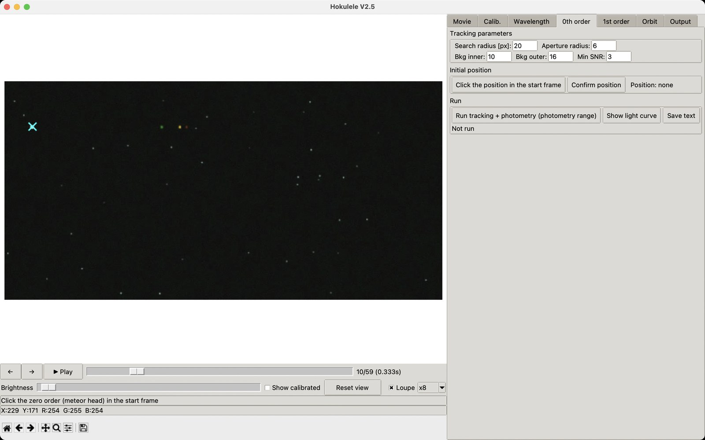
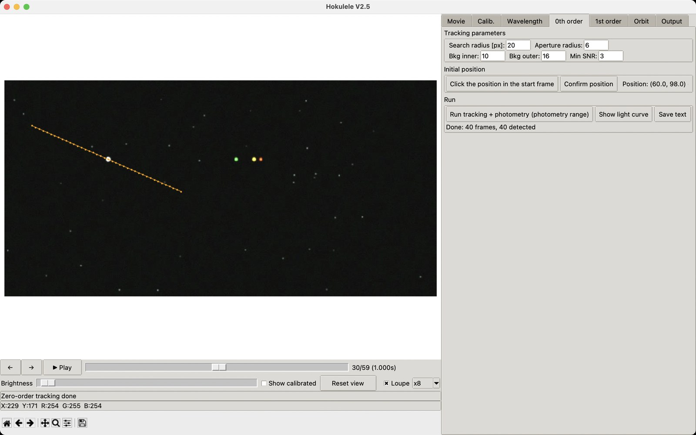
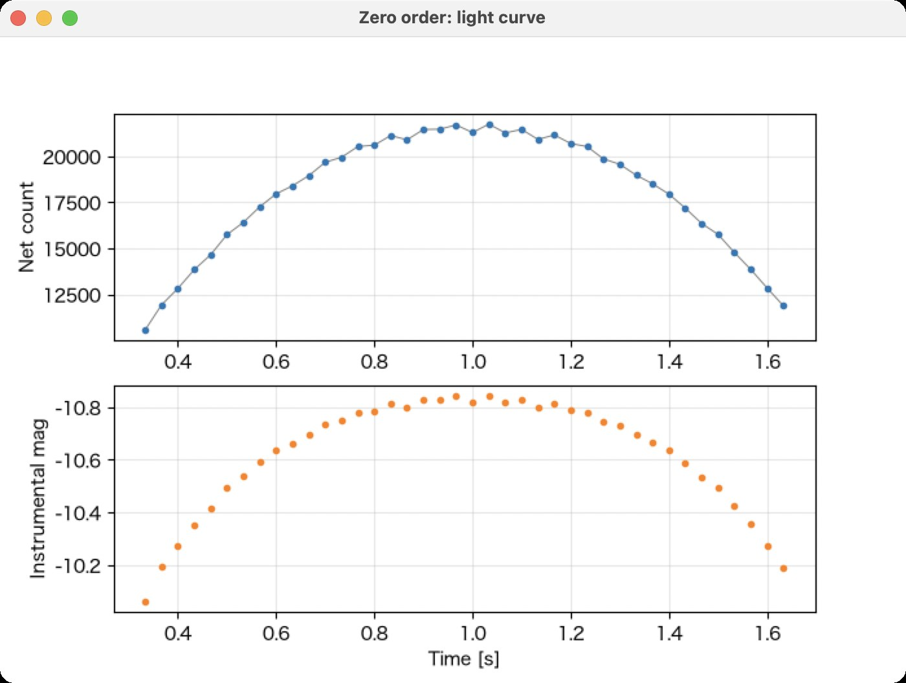
5.5 1st order tab (spectrum / filter photometry)
Sensitivity curve method
Choose, with the radio buttons, how the counts of the spectrum are converted to relative intensity, according to your grating.
| Method | Use / description | Input |
|---|---|---|
Incidence-angle correction (thick grating) |
For gratings whose efficiency depends on the position in the field. Sensitivity curves per incidence angle are interpolated linearly between angles | Set with "Set folder". File names are "<incidence angle [deg]>.txt" (e.g. 0.0.txt, 30.0.txt) |
Common sensitivity curve (sheet grating) |
For gratings with little incidence-angle dependence. One sensitivity curve is applied to the whole field | "Select file": 2-column text [wavelength(nm) relative sensitivity] (4 columns [wavelength R G B] also accepted) |
| No sensitivity correction | Uses counts as intensity (R+G+B for color). For preliminary analysis and line checks | None. Wavelength range defaults to 300–1100 nm |
Photometry settings and running
Dispersion is right to left: flips the sign of the incidence angle.
Clip negative counts to 0: the same processing as V0.971 / V2.3. Off by default (clipping biases low-S/N intensities upward).
Output count values: writes [wavelength, R, G, B] without sensitivity correction (for making sensitivity curves). λ min / λ max must be entered.
Follow the zero-order track: shifts the wavelength origin to the zero-order position in each frame (requires zero-order tracking).
Filter selection: choose any of Johnson-Cousins U B V R I / SDSS u g r i z. "Load custom filter" adds a [wavelength nm, transmission] text file.
Click "Start photometry (per-frame spectra + bands)"; the output folder is shown when it finishes (Figure 20). "Show band light curves" shows the light curve of each band and the mean spectrum (Figure 21).
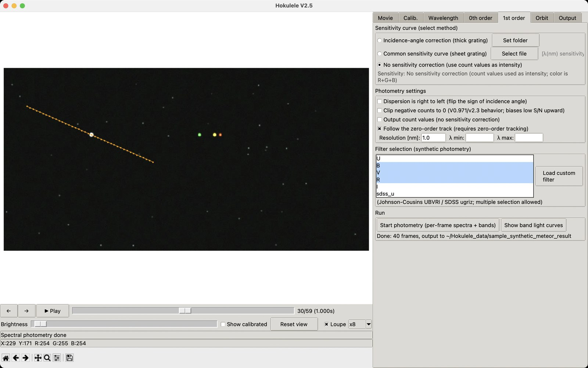
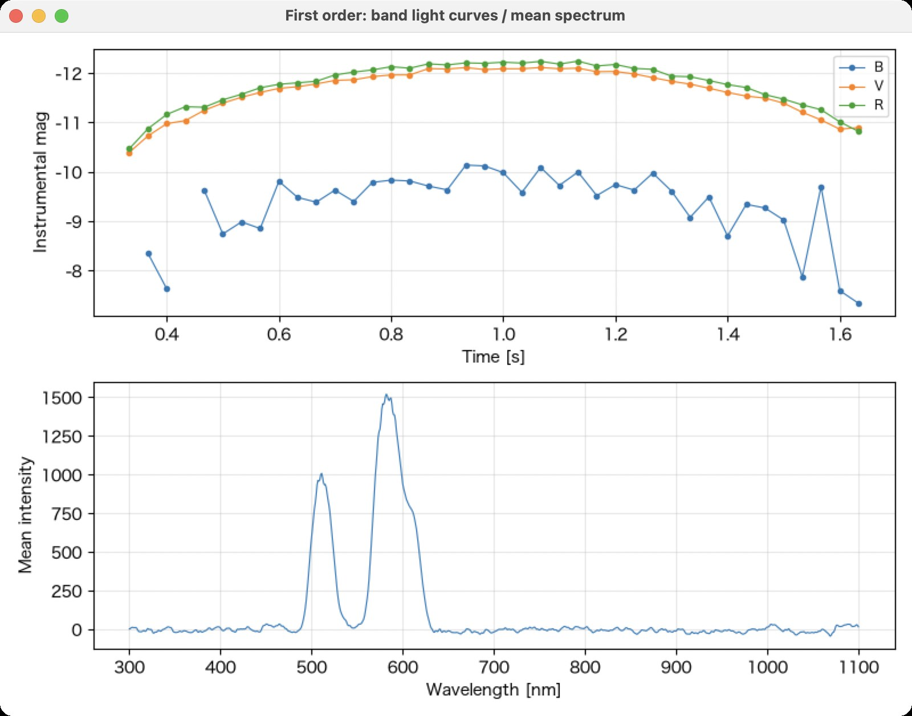
Note: Magnitudes are instrumental (-2.5 log10 flux). Calibration to standard magnitudes needs a separate zero point from standard stars.
5.6 Orbit tab
Estimates the apparent radiant, velocity and heliocentric orbital elements from the zero-order track and the WCS (star matching).
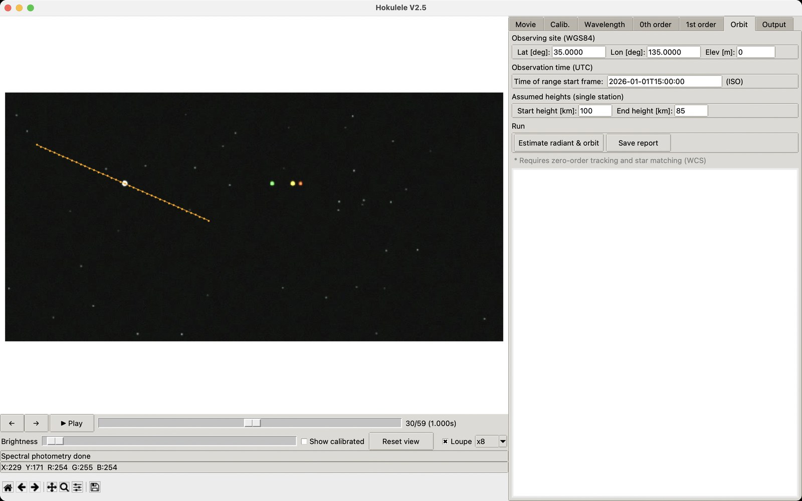
Requirements: zero-order tracking has been run and a WCS is available (star matching or loaded WCS).
Input: latitude, longitude and elevation of the site; UTC time of the first frame of the photometry range (ISO format, e.g. 2026-01-01T15:00:00); assumed start/end heights of the meteor (default 100 / 85 km).
"Estimate radiant & orbit" shows the results in the text box below: apparent / rotation-corrected / geocentric radiant (RA, Dec), observed velocity, v∞, vg, heliocentric velocity and orbital elements a, e, q, i, Ω, ω.
"Save report" writes orbit_report.txt.
Note: With a single station, distance and velocity depend on the assumed heights. If you have multi-station data, enter the measured heights.
5.7 Output tab
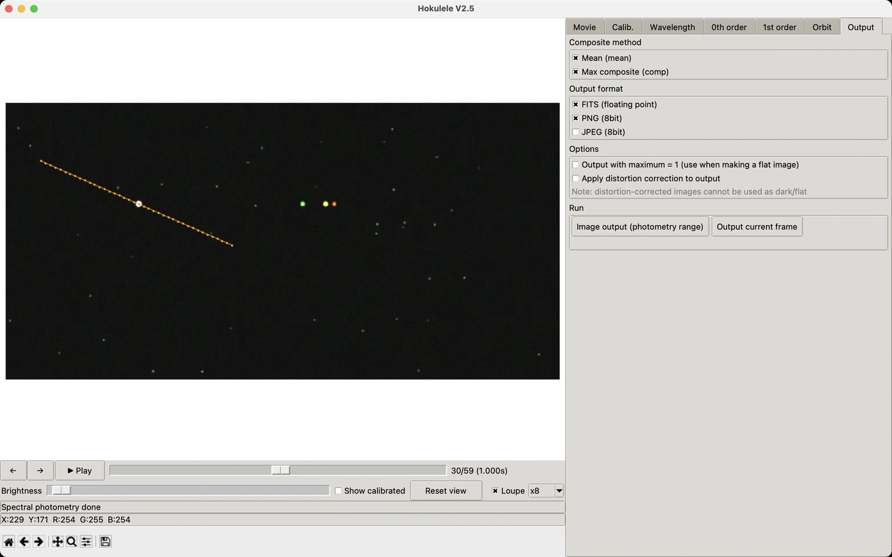
Composite method: mean / maximum (comp).
Output format: FITS (floating point) / PNG (8 bit) / JPEG (8 bit).
"Output with maximum = 1" is for making flat images.
Images written with "Apply distortion correction to output" cannot be used as dark/flat.
"Image output (photometry range)" writes the composite of the photometry range; "Output current frame" writes a single frame.
6. Gamma correction and camera models
Most cameras compress the tonal range (gamma / log curve) when recording. Photometry needs linear counts, so Hokulele applies the inverse of the selected gamma setting to every frame.
| No. | Setting | Inverse transform | Example cameras / recording settings |
|---|---|---|---|
| 0 | RAW (scientific camera) | None | RAW output of ZWO ASI, QHY, Basler, FLIR, cooled CCDs, etc. |
| 1 | γ=1 (linear) | Normalize to 0–1 only | Industrial cameras with gamma OFF, Watec γ=1 |
| 2 | γ=0.35 (Watec LO) | out = in^(1/0.35) | Watec gamma LO (WAT-902H2, WAT-910HX, etc.) |
| 3 | γ=0.45 (Watec HI / NTSC) | out = in^(1/0.45) | Watec gamma HI / default of many analog CCDs |
| 4 | γ=1/1.9 | out = in^1.9 | Consumer video cameras with γ≈1/1.9 |
| 5 | γ=1/2.2 (sRGB-like) | out = in^2.2 | JPEG / stills of ordinary digital cameras |
| 6 | γ=1/2.4 (BT.1886) | out = in^2.4 | Video based on BT.1886 |
| 7 | ITU-R BT.709 (HD video) | Inverse BT.709 OETF | Standard HD video cameras, Canon EOS movies, ME20F-SH Normal |
| 8 | S-Log2 (Sony α) | Inverse S-Log2 | PP7 on Sony α7S/α7SII/α7III, FS7, FS5 |
| 9 | S-Log3 (Sony α/FX) | Inverse S-Log3 | Sony α7SIII, α7IV, α1, FX3, FX6, FX30, etc. |
| 10 | HLG (BT.2100) | Inverse HLG OETF | PP10 on Sony α, LUMIX HLG, GoPro HDR, etc. |
| 11 | Canon Log (ME20F/EOS) | Inverse Canon Log | ME20F-SH Canon Log, EOS R5/R6/R3 C-Log, Cinema EOS |
| 12 | V-Log (Panasonic) | Inverse V-Log | LUMIX GH5/GH5S/GH6, S1/S1H/S5, BGH1, etc. |
The effective gamma depends on the model, firmware and picture profile. The table is a guide.
Sony α: PP OFF / stills → No. 5–7, PP7 → No. 8, PP8/PP9 → No. 9, PP10 → No. 10.
Log video recorded in 8 bit has coarse shadow tones, and quantization noise is amplified after the inverse transform. Record in 10 bit or more if possible.
Always click "Set" after changing the gamma setting. The calibration cache is discarded and later analysis uses the new setting.
7. Output files
Results are written to the "<Result folder>/<movie name>_result/" folder.
| File name | Contents |
|---|---|
| zeroorder_lightcurve.txt | Zero-order light curve: frame, time, x, y, count, bg, SNR, mag, RA, Dec, R, G, B |
| spectrum_#####.txt | Spectrum of each frame [wavelength nm, intensity] (R, G, B in count mode) |
| spectrum_mean_st-en.txt | Mean spectrum of the photometry range |
| band_lightcurve_<filt>.txt | Synthetic band photometry: frame, time, flux, mag_inst, coverage |
| orbit_report.txt | Radiant, velocity and orbital element report |
| <name>_mean / comp .fits/.png/.jpg | Mean / maximum composite spectrum images |
| <name>_settings.json | Project settings (saved wherever you choose) |
| analysis_log.txt | Analysis log (appended automatically) |
7.1 Analysis log (analysis_log.txt)
The main operations are appended automatically. Each time a movie is opened a new session starts, and the movie information, gamma, dark, flat, distortion correction, grating tilt, wavelength calibration equation and RMS residual, sensitivity curve, zero-order tracking, spectral photometry, orbit estimate and image output are recorded with time stamps.
7.2 Compatibility of calibration data
Distortion coefficient files ([k1, k2, k3, ff]) and the sensitivity curve folder format are compatible with V0.971.
The wavelength calibration is saved as [a, b, c, lin_a, lin_b] (V2 format).
Settings JSON files of V2.2 / V2.3 can be loaded as they are.
Files written in English and in Japanese mode have the same numeric format; only comment/header lines differ.
8. FAQ and troubleshooting
Q1. I want to use Hokulele in Japanese (or English)
Switch with the "言語 / Language" menu in the menu bar and restart (Section 2.6).
Q2. The loupe does not appear
Check that "Loupe" is on and a movie is loaded. The loupe hides when the mouse leaves the image area. The L key also toggles it.
Q3. Shortcuts do not work
They are disabled while a text box has the focus. Click the image or a slider first.
Q4. I do not know which gamma setting to choose
See the table in Chapter 6. If unsure, a practical way is to compare the linearity between magnitude and log counts of stars in the field for each setting, and use the most linear one.
Q5. Star matching fails
Check that enough stars are visible (a max composite is recommended), that the approximate field of view is not far off, and the API key and Internet connection. It takes from tens of seconds to a few minutes.
Q6. The orbit estimate looks wrong
The usual causes are input errors in the UTC time or site coordinates, a wrong fps, or poor assumed heights.
Q7. A movie cannot be opened
The codec may not be supported by OpenCV. Convert it to AVI (MJPEG) or MP4 (H.264). Load 16-bit data as an image sequence.
Q8. "Another process is running" appears
Wait until the background process (loading, tracking, photometry, etc.) finishes. Progress is shown in the status bar.
Q9. Which sensitivity curve method should I choose?
Choose "Common sensitivity curve" for sheet gratings, "Incidence-angle correction" for thick gratings (e.g. blazed gratings), and "No sensitivity correction" for preliminary analysis without a sensitivity curve.
Q10. Windows shows "Windows protected your PC"
It appears because the installer is not code-signed. Click "More info" and then "Run anyway".
Q11. macOS says the developer cannot be verified and the app does not open
Click "Open Anyway" in System Settings > Privacy & Security (Section 2.4).
Q12. The demo says "Could not get the demo information"
Check your Internet connection. If the data has been downloaded once, the demo also runs offline with the saved data.
Appendix
Appendix A. Main lines in meteor spectra
| Line | Wavelength [nm] | Line | Wavelength [nm] |
|---|---|---|---|
| Ca II K | 393.37 | Fe I (15) | 526.95 |
| Ca II H | 396.85 | O I | 557.73 |
| Ca I | 422.67 | Na I D | 589.16 |
| Fe I (42) | 430.79 | N2 (1PG) | around 650.0 |
| Fe I (41) | 441.51 | Hα | 656.28 |
| Mg I (2) | 448.11 | N I | 746.83 |
| Mg I b | 517.27 | O I | 777.42 / 844.64 |
Appendix B. Version history
| Version | Changes |
|---|---|
| V0.971 (2021/04) | Movie extraction with ffmpeg, 10 gamma corrections, chart distortion measurement, spectrum text output |
| V2.0 (v1.0) | Direct loading with OpenCV, star matching, zero-order tracking + aperture photometry, UBVRI/SDSS synthetic photometry, radiant and orbit estimation, FITS/PNG/JPEG output |
| V2.1 (v1.1) | Loupe, camera model names for gamma settings and HLG / Canon Log / V-Log, shortcuts, preview playback, elapsed time, settings JSON |
| V2.2 (v1.2) | Choice of sensitivity curve method (3 methods), analysis log, display and header output of the wavelength calibration equation |
| V2.3 (v1.3) | Code reorganized into the hokulele/ package (multiple modules). Features, operation and results unchanged from v1.2 |
| V2.4 | Windows / macOS versions, spectral analysis demo, negative counts not clipped by default, fixes for distortion files, sensitivity channel switching and incidence angle |
| V2.4.1 | Manual updated for V2.4 screens, citation and acknowledgment added, demo text corrected |
| V2.5.1 | New icon (Leo, zero/first-order meteor images, meteor spectrum) |
| V2.5 | English / Japanese display, distribution moved to nu-sx/hokulele, English manual |
Appendix C. Modules (V2.5.1)
| Module | Role |
|---|---|
| constants | Constants, line list, filter curves, gamma settings |
| gamma | Camera gamma correction |
| distortion | Brown distortion model, celestial coordinate utilities |
| calib_io | Loading dark/flat images |
| frame_source | Movie/image-sequence frame source and calibration pipeline |
| astrometry | Plate solving with astrometry.net |
| tracker | Zero-order tracking and aperture photometry |
| spectrum | Spectrum extraction, wavelength calibration, sensitivity correction, filter photometry |
| orbit | Radiant, velocity and orbital element estimation |
| output | FITS/PNG/JPEG/text output |
| utils | Small GUI helpers |
| gui_wavecal | Wavelength calibration (line identification) window |
| demo | Getting the demo data (download from GitHub and cache) |
| gui_demo | Spectral analysis demo window |
| i18n / i18n_en | Display language switching and the English translation table |
| gui_app | Main GUI (HokuleleApp) and entry function main() |